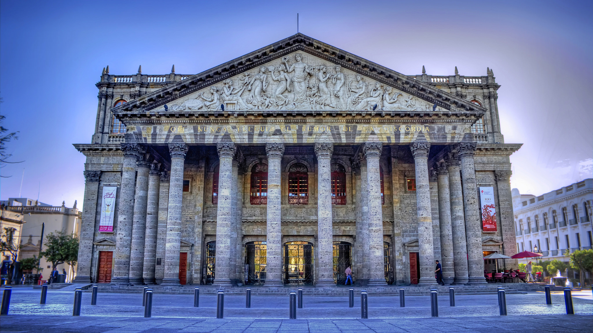

En el corazón de Medellín, un lugar lleno de historia y cultura. Un edificio antiguo que había sido testigo de innumerables eventos y momentos, pero que con el paso del tiempo había caído en el olvido. Ese lugar estaba destinado a ser el hogar de tu nuevo teatro. Después de meses de arduo trabajo, restaurando y renovando cada rincón del edificio, finalmente llegó el gran día. La noche de la apertura del teatro. Las luces del teatro brillaban como un faro en la noche, atrayendo a la gente de todas partes. La alfombra roja se extendía desde la entrada hasta la puerta del teatro, donde te encontrabas, listo para dar la bienvenida a tus invitados. La emoción en el aire era palpable. Los invitados comenzaron a llegar, cada uno de ellos maravillado por la belleza y la elegancia del lugar. La primera obra a presentarse fue una producción local, una historia de amor y pérdida que reflejaba la historia del propio teatro. La audiencia quedó cautivada desde el primer acto, y al final de la noche, los aplausos llenaron el teatro, un sonido que resonaría en sus paredes durante muchos años más. La apertura del teatro fue un éxito rotundo. No solo lograste revivir un pedazo de historia, sino que también creaste un espacio para que los artistas locales presenten su trabajo y para que la comunidad se reúna y comparta experiencias. Desde aquel día, el teatro se convirtió en un punto de referencia en Medellín, un lugar donde la historia, la cultura y las artes se entrelazan, y todo gracias a tu visión y dedicación. Y así, el telón se levanta para la próxima actuación, y el teatro sigue vivo, respirando nuevas historias en cada función. Tu teatro, un sueño hecho realidad.
Para más información, contacta con nosotros: